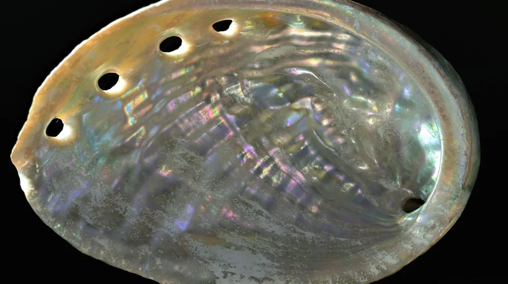
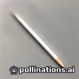

나전칠기 소품, 구매 전 이것만 알면 끝! 진짜 명품 고르는 비법
사진: Thierry coulon / Pexels (무료 이미지, 출처 표기)
나전칠기 소품 구매를 고민하고 계신가요?

아름다운 자개 빛깔에 마음을 빼앗겼지만, 어떤 제품을 골라야 할지 막막하다면 이 글이 답이 될 것입니다. 진짜 명품 나전칠기 소품을 선택하는 기준부터 합리적인 가격대 제품을 고르는 노하우, 그리고 소중하게 관리하는 방법까지, 구매 전 꼭 알아야 할 모든 정보를 정리했습니다.
나전칠기 소품, 어떤 종류가 있을까?
나전칠기(螺鈿漆器)는 조개껍데기를 얇게 갈아 문양을 만들고 옻칠(漆)한 목재 기물에 상감(象嵌)하는 한국의 전통 공예입니다. 화려하면서도 깊이 있는 아름다움이 특징이죠. 일상생활에서 쉽게 접할 수 있는 나전칠기 소품은 다음과 같습니다.
- 보석함: 섬세한 자개 문양으로 장식되어 보석을 더욱 귀하게 보관할 수 있습니다.
- 명함집/카드 지갑: 휴대성이 좋아 비즈니스나 일상에서 품격을 높여줍니다.
- 손거울: 전통미와 실용성을 겸비하여 선물용으로도 인기가 많습니다.
- 찻상/트레이: 다도 용품이나 다과를 올리는 용도로 격조 높은 분위기를 연출합니다.
- 벽걸이 장식패: 작은 공간에도 한국적인 미를 더할 수 있는 인테리어 소품입니다.
- 필함/문구류: 서재나 사무실에 고풍스러운 멋을 더해줍니다.
이 외에도 다양한 크기와 용도의 소품이 있어, 취향과 용도에 맞춰 선택의 폭이 넓습니다.
진짜 나전칠기와 아류작, 무엇이 다를까?
나전칠기 소품은 그 제작 방식과 사용된 재료에 따라 품질과 가치가 크게 달라집니다. 특히 진짜 전통 나전칠기와 대량 생산된 아류작은 다음과 같은 부분에서 차이를 보입니다. 핵심적인 차이를 통해 현명하게 선택해 보세요.
위 표를 참고하면, 진짜 나전칠기는 수작업과 천연 재료 사용으로 인해 깊이 있는 아름다움과 내구성을 가지며, 가격도 높게 형성되는 경향이 있습니다. 반면 아류작은 저렴한 가격으로 나전칠기의 분위기를 낼 수는 있지만, 예술적 가치나 내구성은 떨어진다고 볼 수 있습니다.
나전칠기 소품, 가격대별 특징과 합리적 선택 가이드
나전칠기 소품은 수만 원대부터 수백만 원대까지 가격 스펙트럼이 매우 넓습니다. 예산에 맞춰 어떤 제품을 고를지 고민된다면 다음 가이드를 참고해 보세요.
- 10만 원 미만 (입문용): 주로 합성 자개 필름이나 인조 자개를 사용하여 기계로 제작된 제품이 많습니다. 실용성에 초점을 맞추거나 나전칠기 특유의 분위기를 가볍게 즐기고 싶을 때 좋습니다.
- 10만 원대 ~ 50만 원대 (실속형): 부분적으로 천연 자개와 옻칠을 사용하거나, 기계와 수작업이 병행된 제품이 많습니다. 실용성과 함께 전통 공예의 아름다움을 적절히 갖춘 선에서 합리적인 선택이 될 수 있습니다.
- 50만 원 이상 (고급형): 숙련된 장인의 수작업으로 천연 자개와 정품 옻칠이 사용되는 경우가 많습니다. 문양의 섬세함과 마감의 완성도가 뛰어나며, 소장 가치가 높습니다. 중요한 선물이나 가보로 간직할 제품을 찾을 때 적합합니다.
합리적인 구매를 위해서는 단순히 가격만 볼 것이 아니라, 위에서 설명한 자개의 품질, 칠의 종류, 제작 방식을 종합적으로 고려하는 것이 중요합니다. 판매처에서 제품의 상세 설명이나 인증서를 꼼꼼히 확인하는 것을 권장합니다.
오래오래 아름답게, 나전칠기 소품 관리 및 보관법
나전칠기 소품의 아름다움을 오랫동안 유지하려면 올바른 관리와 보관이 필수적입니다. 2026년 11월 기준으로 다음과 같은 점에 유의해 주세요.
- 직사광선 피하기: 햇빛에 오래 노출되면 칠이 변색되거나 자개가 바랠 수 있습니다. 그늘진 곳에 보관하는 것이 좋습니다.
- 습도 조절: 너무 건조하거나 습한 환경은 칠에 균열을 일으킬 수 있습니다. 적정 습도(40~60%)가 유지되는 곳에 두세요.
- 충격 주의: 자개는 깨지기 쉽고 칠은 긁힘에 약합니다. 떨어뜨리거나 날카로운 물건에 닿지 않도록 조심해야 합니다.
- 부드러운 천으로 닦기: 먼지가 쌓이면 부드러운 마른 천으로 가볍게 닦아주세요. 거친 수건이나 화학 세제는 표면을 손상시킬 수 있습니다.
- 오염 시 대처: 만약 이물질이 묻었다면, 물에 희석한 중성세제를 부드러운 천에 묻혀 조심스럽게 닦아낸 후 마른 천으로 물기를 제거합니다.
정확한 사항은 구매처의 안내나 국립무형유산원과 같은 전통 공예 전문 기관의 자료를 확인하시길 권장합니다.
나전칠기 소품 구매 시 주의할 점 및 현명한 선택 팁
나전칠기 소품 구매는 단순한 소비를 넘어 하나의 예술품을 소장하는 것과 같습니다. 후회 없는 선택을 위해 다음 사항들을 꼭 기억하세요.
- 판매자 및 출처 확인: 신뢰할 수 있는 전통 공예 전문점, 백화점, 또는 장인 공방에서 구매하는 것이 좋습니다. 제작자의 이름이나 공방의 정보가 명확히 제시되는지 확인하세요.
- 직접 보고 구매하기: 가능하면 실물을 직접 보고 자개의 빛깔, 칠의 광택, 마감의 정교함을 확인하는 것이 중요합니다. 온라인 구매 시에는 상세 사진과 고객 후기를 꼼꼼히 살펴보세요.
- A/S 및 보증 여부: 고가의 나전칠기 소품이라면 향후 수리나 관리가 필요할 수 있습니다. 판매처에서 A/S가 가능한지, 품질 보증은 되는지 미리 확인하는 것이 좋습니다.
- 용도와 디자인 조화: 어떤 용도로 사용할지, 인테리어와 잘 어울리는 디자인인지 미리 생각해두면 만족스러운 구매로 이어질 수 있습니다.
이 가이드를 통해 나전칠기 소품을 현명하게 선택하고, 오랫동안 아름답게 간직하시길 바랍니다.
🔗 이 글도 함께 보면 좋아요: 나전칠기 소품, 첫 구매 전 꼭 확인하세요! 실패 없는 선택 가이드
관련 추천 상품
나전칠기 보석함, 자개 명함집, 전통 공예품 관련 인기 상품 보러가기
이 포스팅은 쿠팡 파트너스 활동의 일환으로, 이에 따른 일정액의 수수료를 제공받습니다.
한눈에 보는 상품 목록

나전칠기 보석함
섬세한 자개 문양으로 고급스러움을 더한 보석 보관함.
나전칠기 명함집
비즈니스 자리에서 품격을 높여주는 휴대용 명함 케이스.
나전칠기 손거울
전통미와 실용성을 겸비한 휴대용 거울.
나전칠기 찻상
격조 높은 다도 생활을 위한 아름다운 다과상.
나전칠기 장식패
공간에 한국적 미를 더하는 벽걸이 또는 스탠드형 장식품.